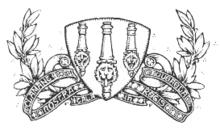

Woolwich Arsenal (in dark shirts) playing Newcastle United (in striped shirts) in an FA Cup semi-final - the club's first ever - at the Victoria Ground, Stoke.
Arsenal Football Club were formed as Dial Square in 1886 by workers at the Royal Arsenal in Woolwich, south-east London, and were renamed Royal Arsenal shortly afterwards. The club were renamed again to Woolwich Arsenal after becoming a limited company in 1893. The club became the first southern member of the Football League in 1893, starting out in the Second Division, and won promotion to the First Division in 1904. The club's relative geographic isolation resulted in lower attendances than those of other clubs, which led to the club becoming mired in financial problems and effectively bankrupt by 1910, when they were taken over by businessmen Henry Norris and William Hall. Norris sought to move the club elsewhere, and in 1913, soon after relegation back to the Second Division, Arsenal moved to the new Arsenal Stadium in Highbury, north London; they dropped "Woolwich" from their name the following year. Arsenal only finished in fifth place in the second division during the last pre-war competitive season of 1914-15, but were nevertheless elected to rejoin the First Division when competitive football resumed in 1919-20, at the expense of local rivals Tottenham Hotspur. Some books have reported that this election to division 1 was achieved by dubious means.
Arsenal appointed Herbert Chapman as manager in 1925. Having already won the league twice with Huddersfield Town in 1923-24 and 1924-25 (see Seasons in English football), Chapman brought Arsenal their first period of major success. His revolutionary tactics and training, along with the signings of star players such as Alex James and Cliff Bastin, laid the foundations of the club's domination of English football in the 1930s.
Under his guidance Arsenal won their first major trophies - victory in the 1930 FA Cup Final preceded two League Championships, in 1930-31 and 1932-33. In addition, Chapman was behind the 1932 renaming of the local London Underground station from "Gillespie Road" to "Arsenal", making it the only Tube station to be named specifically after a football club.
Chapman died suddenly of pneumonia in early 1934, leaving Joe Shaw and George Allison to carry on his successful work. Under their guidance, Arsenal won three more titles, in 1933-34, 1934-35 and 1937-38, and the 1936 FA Cup while also becoming known as the "Bank of England club." As key players retired, Arsenal had started to fade by the decade's end, and then the intervention of the Second World War meant competitive professional football in England was suspended.
After the war, Arsenal enjoyed a second period of success under Allison's successor Tom Whittaker, winning the league in 1947-48 and 1952-53, and the FA Cup in 1950. Their fortunes waned thereafter; unable to attract players of the same calibre as they had in the 1930s, the club spent most of the 1950s and 1960s in trophyless mediocrity. Even former England captain Billy Wright could not bring the club any success as manager, in a stint between 1962 and 1966.
Arsenal began winning silverware again with the surprise appointment of club physiotherapist Bertie Mee as manager in 1966. After losing two League Cup finals, they won their first European trophy, the 1969-70 Inter-Cities Fairs Cup. This was followed by an even greater triumph: their first League and FA Cup double in 1970-71. This marked a premature high point of the decade; the Double-winning side was soon broken up and the following decade was characterised by a series of near misses, starting with Arsenal finishing as FA Cup runners up in 1972, and First Division runners-up in 1972-73.
Terry Neill was recruited by the Arsenal board to replace Bertie Mee on 9 July 1976 and at the age of 34 he became the youngest Arsenal manager to date. With new signings like Malcolm Macdonald and Pat Jennings, and a crop of talent in the side such as Liam Brady and Frank Stapleton, the club enjoyed their best form since the 1971 double, reaching a trio of FA Cup finals (1978, 1979 and 1980), and losing the 1980 European Cup Winners' Cup Final on penalties. The club's only success during this time was a last-minute 3-2 victory over Manchester United in the 1979 FA Cup Final, widely regarded as a classic.
The return of former player George Graham as manager in 1986 brought a third period of glory. Arsenal won the League Cup in 1987, Graham's first season in charge. This was followed by a League title win in 1988-89, won with a last-minute goal in the final game of the season against fellow title challengers Liverpool. Graham's Arsenal won another title in 1990-91, losing only one match, won the FA Cup and League Cup double in 1993, and a second European trophy, the European Cup Winners' Cup, in 1994. Graham's reputation was tarnished when he was found to have taken kickbacks from agent Rune Hauge for signing certain players, and he was dismissed in 1995. His replacement, Bruce Rioch, lasted for only one season, leaving the club after a dispute with the board of directors.
The club's success in the late 1990s and first decade of the 21st century owed a great deal to the 1996 appointment of Arsene Wenger as manager. Wenger brought new tactics, a new training regime and several foreign players who complemented the existing English talent. Arsenal won a second League and Cup double in 1997-98 and a third in 2001-02. In addition, the club reached the final of the 1999-2000 UEFA Cup (losing on penalties to Galatasaray), were victorious in the 2003 and 2005 FA Cups, and won the Premier League in 2003-04 without losing a single match, an achievement which earned the side the nickname "The Invincibles". The feat came within a run of 49 league matches unbeaten from 7 May 2003 to 24 October 2004, a national record.
Arsenal's players and fans celebrate their 2004 League title win with an open-top bus parade.
Arsenal finished in either first or second place in the league in eight of Wenger's first eleven seasons at the club, although on no occasion were they able to retain the title. As of July 2013, they were one of only five teams, the others being Manchester United, Blackburn Rovers, Chelsea, and Manchester City, to have won the Premier League since its formation in 1992. Arsenal had never progressed beyond the quarter-finals of the Champions League until 2005-06; in that season they became the first club from London in the competition's fifty-year history to reach the final, in which they were beaten 2-1 by Barcelona. In July 2006, they moved into the Emirates Stadium, after 93 years at Highbury.
Arsenal reached the final of the 2007 and 2011 League Cups, losing 2-1 to Chelsea and Birmingham City respectively. The club had not gained a major trophy since the 2005 FA Cup until 17 May 2014, when Arsenal beat Hull City in the 2014 FA Cup Final, coming back from a 2-0 deficit to win the match 3-2. This qualified them for the 2014 FA Community Shield where they would play Premier League champions Manchester City. They recorded a resounding 3-0 win in the game, winning their second trophy in three months. Nine months after their Community Shield triumph, Arsenal appeared in the FA Cup final for the second year in a row, thrashing Aston Villa 4-0 in the final and becoming the most successful club in the tournament's history with 12 titles. On 2 August 2015 Arsenal beat Chelsea 1-0 at Wembley Stadium to retain the Community Shield and earn their 14th Community Shield title.
Crest

Arsenal's first crest from 1888
Unveiled in 1888, Royal Arsenal's first crest featured three cannon viewed from above, pointing northwards, similar to the coat of arms of the Metropolitan Borough of Woolwich (nowadays transferred to the coat of arms of the Royal Borough of Greenwich). These can sometimes be mistaken for chimneys, but the presence of a carved lion's head and a cascabel on each are clear indicators that they are cannon. This was dropped after the move to Highbury in 1913, only to be reinstated in 1922, when the club adopted a crest featuring a single cannon, pointing eastwards, with the club's nickname, The Gunners, inscribed alongside it; this crest only lasted until 1925, when the cannon was reversed to point westward and its barrel slimmed down.
In 1949, the club unveiled a modernised crest featuring the same style of cannon below the club's name, set in blackletter, and above the coat of arms of the Metropolitan Borough of Islington and a scroll inscribed with the club's newly adopted Latin motto, Victoria Concordia Crescit "victory comes from harmony", coined by the club's programme editor Harry Homer. For the first time, the crest was rendered in colour, which varied slightly over the crest's lifespan, finally becoming red, gold and green. Because of the numerous revisions of the crest, Arsenal were unable to copyright it. Although the club had managed to register the crest as a trademark, and had fought (and eventually won) a long legal battle with a local street trader who sold "unofficial" Arsenal merchandise, Arsenal eventually sought a more comprehensive legal protection. Therefore, in 2002 they introduced a new crest featuring more modern curved lines and a simplified style, which was copyrightable. The cannon once again faces east and the club's name is written in a sans-serif typeface above the cannon. Green was replaced by dark blue. The new crest was criticised by some supporters; the Arsenal Independent Supporters' Association claimed that the club had ignored much of Arsenal's history and tradition with such a radical modern design, and that fans had not been properly consulted on the issue.
Until the 1960s, a badge was worn on the playing shirt only for high-profile matches such as FA Cup finals, usually in the form of a monogram of the club's initials in red on a white background.
The monogram theme was developed into an Art Deco-style badge on which the letters A and C framed a football rather than the letter F, the whole set within a hexagonal border. This early example of a corporate logo, introduced as part of Herbert Chapman's rebranding of the club in the 1930s, was used not only on Cup Final shirts but as a design feature throughout Highbury Stadium, including above the main entrance and inlaid in the floors. From 1967, a white cannon was regularly worn on the shirts, until replaced by the club crest, sometimes with the addition of the nickname "The Gunners", in the 1990s.
In the 2011-12 season, Arsenal celebrated their 125th year anniversary. The celebrations included a modified version of the current crest worn on their jerseys for the season. The crest was all white, surrounded by 15 oak leaves to the right and 15 laurel leaves to the left. The oak leaves represent the 15 founding members of the club who met at the Royal Oak pub. The 15 laurel leaves represent the design detail on the six pence pieces paid by the founding fathers to establish the club. The laurel leaves also represent strength. To complete the crest, 1886 and 2011 are shown on either sides of the motto "Forward" at the bottom of the crest.
Colors
For much of Arsenal's history, their home colours have been bright red shirts with white sleeves and white shorts, though this has not always been the case. The choice of red is in recognition of a charitable donation from Nottingham Forest, soon after Arsenal's foundation in 1886. Two of Dial Square's founding members, Fred Beardsley and Morris Bates, were former Forest players who had moved to Woolwich for work. As they put together the first team in the area, no kit could be found, so Beardsley and Bates wrote home for help and received a set of kit and a ball. The shirt was redcurrant, a dark shade of red, and was worn with white shorts and socks with blue and white hoops.
In 1933, Herbert Chapman, wanting his players to be more distinctly dressed, updated the kit, adding white sleeves and changing the shade to a brighter pillar box red. Two possibilities have been suggested for the origin of the white sleeves. One story reports that Chapman noticed a supporter in the stands wearing a red sleeveless sweater over a white shirt; another was that he was inspired by a similar outfit worn by the cartoonist Tom Webster, with whom Chapman played golf. Regardless of which story is true, the red and white shirts have come to define Arsenal and the team have worn the combination ever since, aside from two seasons. The first was 1966-67, when Arsenal wore all-red shirts; this proved unpopular and the white sleeves returned the following season. The second was 2005-06, the last season that Arsenal played at Highbury, when the team wore commemorative redcurrant shirts similar to those worn in 1913, their first season in the stadium; the club reverted to their normal colours at the start of the next season. In the 2008-09 season, Arsenal replaced the traditional all-white sleeves with red sleeves with a broad white stripe.
Arsenal's home colours have been the inspiration for at least three other clubs. In 1909, Sparta Prague adopted a dark red kit like the one Arsenal wore at the time; in 1938, Hibernian adopted the design of the Arsenal shirt sleeves in their own green and white strip. In 1920, Sporting Clube de Braga's manager returned from a game at Highbury and changed his team's green kit to a duplicate of Arsenal's red with white sleeves and shorts, giving rise to the team's nickname of Os Arsenalistas. These teams still wear those designs to this day.
For many years Arsenal's away colours were white shirts and either black or white shorts. In the 1969-70 season, Arsenal introduced an away kit of yellow shirts with blue shorts. This kit was worn in the 1971 FA Cup Final as Arsenal beat Liverpool to secure the double for the first time in their history. Arsenal reached the FA Cup final again the following year wearing the red and white home strip and were beaten by Leeds United. Arsenal then competed in three consecutive FA Cup finals between 1978 and 1980 wearing their "lucky" yellow and blue strip, which remained the club's away strip until the release of a green and navy away kit in 1982-83. The following season, Arsenal returned to the yellow and blue scheme, albeit with a darker shade of blue than before.
When Nike took over from Adidas as Arsenal's kit provider in 1994, Arsenal's away colours were again changed to two-tone blue shirts and shorts. Since the advent of the lucrative replica kit market, the away kits have been changed regularly, with Arsenal usually releasing both away and third choice kits. During this period the designs have been either all blue designs, or variations on the traditional yellow and blue, such as the metallic gold and navy strip used in the 2001-02 season, the yellow and dark grey used from 2005 to 2007, and the yellow and maroon of 2010 to 2013. As of 2009, the away kit is changed every season, and the outgoing away kit becomes the third-choice kit if a new home kit is being introduced in the same year.
Stadiums
The North Bank Stand, Arsenal Stadium, Highbury
For most of their time in south-east London, Arsenal played at the Manor Ground in Plumstead, apart from a three-year period at the nearby Invicta Ground between 1890 and 1893. The Manor Ground was initially just a field, until the club installed stands and terracing for their first Football League match in September 1893. They played their home games there for the next twenty years (with two exceptions in the 1894-95 season), until the move to North London in 1913.
Widely referred to as Highbury, Arsenal Stadium was the club's home from September 1913 until May 2006. The original stadium was designed by the renowned football architect Archibald Leitch, and had a design common to many football grounds in the UK at the time, with a single covered stand and three open-air banks of terracing. The entire stadium was given a massive overhaul in the 1930s: new Art Deco West and East stands were constructed, opening in 1932 and 1936 respectively, and a roof was added to the North Bank terrace, which was bombed during the Second World War and not restored until 1954.
Highbury could hold more than 60,000 spectators at its peak, and had a capacity of 57,000 until the early 1990s. The Taylor Report and Premier League regulations obliged Arsenal to convert Highbury to an all-seater stadium in time for the 1993-94 season, thus reducing the capacity to 38,419 seated spectators. This capacity had to be reduced further during Champions League matches to accommodate additional advertising boards, so much so that for two seasons, from 1998 to 2000, Arsenal played Champions League home matches at Wembley, which could house more than 70,000 spectators.
Statistics and records
Thierry Henry is Arsenal's record goalscorer, with 228 goals in all competitions.
Arsenal's tally of 13 League Championships is the third highest in English football, after Manchester United (20) and Liverpool (18), with a record of 12 FA Cup titles. Arsenal have achieved three League and FA Cup "Doubles" (in 1971, 1998 and 2002), a feat only previously achieved by Manchester United (in 1994, 1996 and 1999), and in 1993 were the first side in English football to complete the FA Cup and League Cup double. Arsenal were also the first London club to reach the final of the UEFA Champions League, in 2006, losing the final 2-1 to Barcelona.
Arsenal have one of the best top-flight records in history, having finished below fourteenth only seven times. Arsenal also have the highest average league finishing position for the 20th century, with an average league placing of 8.5. In addition, they are one of only six clubs to have won the FA Cup twice in succession, in 2002 and 2003, and 2014 and 2015. Arsenal also hold the record for the longest unbeaten run in the Premier League at 49 games, and are the only team to have gone an entire Premier League season unbeaten in 2003-04.
David O'Leary holds the record for Arsenal appearances, having played 722 first-team matches between 1975 and 1993. Fellow centre half and former captain Tony Adams comes second, having played 669 times. The record for a goalkeeper is held by David Seaman, with 564 appearances.
Thierry Henry is the club's top goalscorer with 228 goals in all competitions between 1999 and 2012, having surpassed Ian Wright's total of 185 in October 2005. Wright's record had stood since September 1997, when he overtook the longstanding total of 178 goals set by winger Cliff Bastin in 1939. Henry also holds the club record for goals scored in the League, with 175, a record that had been held by Bastin until February 2006.
Arsenal's record home attendance is 73,707, for a UEFA Champions League match against RC Lens on 25 November 1998 at Wembley Stadium, where the club formerly played home European matches because of the limits on Highbury's capacity. The record attendance for an Arsenal match at Highbury is 73,295, for a 0-0 draw against Sunderland on 9 March 1935, while that at Emirates Stadium is 60,161, for a 2-2 draw with Manchester United on 3 November 2007.
Arsenal have also set records in English football, including the most consecutive seasons spent in the top flight (90 as of 2015-16) and the longest run of unbeaten League matches (49 between May 2003 and October 2004). This included all 38 matches of their title-winning 2003-04 season, when Arsenal became only the second club to finish a top-flight campaign unbeaten, after Preston North End (who played only 22 matches) in 1888-89.
Arsenal also set a Champions League record during the 2005-06 season by going ten matches without conceding a goal, beating the previous best of seven set by A.C. Milan. They went a record total stretch of 995 minutes without letting an opponent score; the streak ended in the final, when Samuel Eto'o scored a 76th-minute equaliser for Barcelona.
For more articles go to News
Follow us on social media.
 Welcome to my own Arsenal Football Club Site!!!
Welcome to my own Arsenal Football Club Site!!!
 Hull City - Arsenal
Hull City - Arsenal  Tottenham 2 - 2 Arsenal
Tottenham 2 - 2 Arsenal